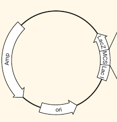

Karteikarte erstellen
Vorderseite
<p>Was beinhaltet ein Standardvektor?</p>
Rückseite
Polylinkregion - multiple cloning site (MCS)
origin of replication - ori
Selektionsmarker
Restriktionsschnittstellen
